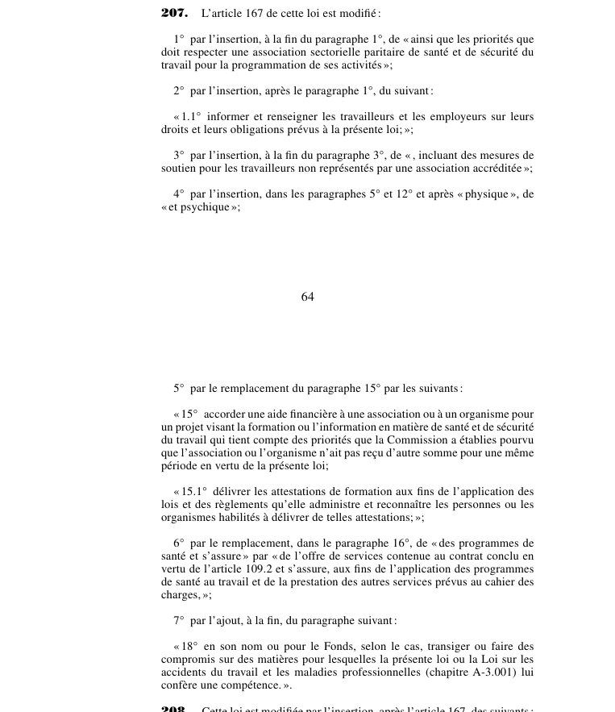

art-207-LMRSST : modifie l'art. 167 LSST
Article modificateur de la LMRSST (L.Q. 2021, c. 27). Il s'agit d'une modification apportée à la LSST.
- Modifie art. 167 LSST.
📄 PDF officiel (page 64) · 🌐 LegisQuébec
Texte officiel
L’article 167 de cette loi est modifié :
1° par l’insertion, à la fin du paragraphe 1°, de « ainsi que les priorités que doit respecter une association sectorielle paritaire de santé et de sécurité du travail pour la programmation de ses activités »;
2° par l’insertion, après le paragraphe 1°, du suivant :
« 1.1° informer et renseigner les travailleurs et les employeurs sur leurs droits et leurs obligations prévus à la présente loi; »;
3° par l’insertion, à la fin du paragraphe 3°, de « , incluant des mesures de soutien pour les travailleurs non représentés par une association accréditée »;
4° par l’insertion, dans les paragraphes 5° et 12° et après « physique », de « et psychique »;
5° par le remplacement du paragraphe 15° par les suivants :
« 15° accorder une aide financière à une association ou à un organisme pour un projet visant la formation ou l’information en matière de santé et de sécurité du travail qui tient compte des priorités que la Commission a établies pourvu que l’association ou l’organisme n’ait pas reçu d’autre somme pour une même période en vertu de la présente loi;
« 15.1° délivrer les attestations de formation aux fins de l’application des lois et des règlements qu’elle administre et reconnaître les personnes ou les organismes habilités à délivrer de telles attestations; »;
6° par le remplacement, dans le paragraphe 16°, de « des programmes de santé et s’assure » par « de l’offre de services contenue au contrat conclu en vertu de l’article 109.2 et s’assure, aux fins de l’application des programmes de santé au travail et de la prestation des autres services prévus au cahier des charges, »;
7° par l’ajout, à la fin, du paragraphe suivant :
« 18° en son nom ou pour le Fonds, selon le cas, transiger ou faire des compromis sur des matières pour lesquelles la présente loi ou la Loi sur les accidents du travail et les maladies professionnelles (chapitre A-3.001) lui confère une compétence. ».
Texte de l’article 207 LMRSST, extrait de la couche texte du PDF officiel (page 64), sans OCR ni retouche. La capture ci-dessous et le PDF font foi.
{kind=link}

Toucher l'image pour l'agrandir🔗 Ouvrir a cette page : LMRSST.pdf : page 64
- Modifie art. 167 LSST.
Portée et effet
Adopté dans le cadre de la réforme de 2021 modernisant le régime de santé et de sécurité du travail, l'article 207 de la LMRSST insère une nouvelle disposition dans la LSST, en lien avec art. 167 LSST. Le texte en vigueur de la disposition visée intègre désormais cette modification ; le libellé exact figure dans la capture officielle ci-dessus. Le chapitre II de la LMRSST modernise la LSST : mécanismes de prévention et de participation des travailleurs, régime intérimaire et rôles des intervenants en santé et sécurité.
La jurisprudence porte sur la disposition modifiée, art. 167 LSST, et non sur l'article modificateur lui-même (les décisions et leurs PDF sont rassemblés sur la page de cet article).
Voir aussi
- 🎯 Article(s) modifié(s) : art. 167 LSST · en outre des autres fonctions qui lui sont attribuées par la loi, la Commission exerce notamment les fonctions suivantes : établir les priorités d'intervention, informer travailleurs et employeurs, accorder un concours technique aux comités de santé et de sécurité.
- 🗓️ Entrée en vigueur : 1er octobre 2025 (régime permanent : art. 313 ¶7, Décret 1154-2025) (voir art. 313 LMRSST)
- 📚 Chapitre : Chap. II : modifications à la LSST
- ↑ Loi : LMRSST
Pages qui pointent ici (2)
- art-167-LSST : liste des fonctions de la Commission Recueil législatif
- LMRSST : Chapitre II : Modifications à la LSST Recueil législatif